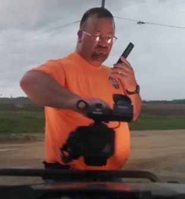
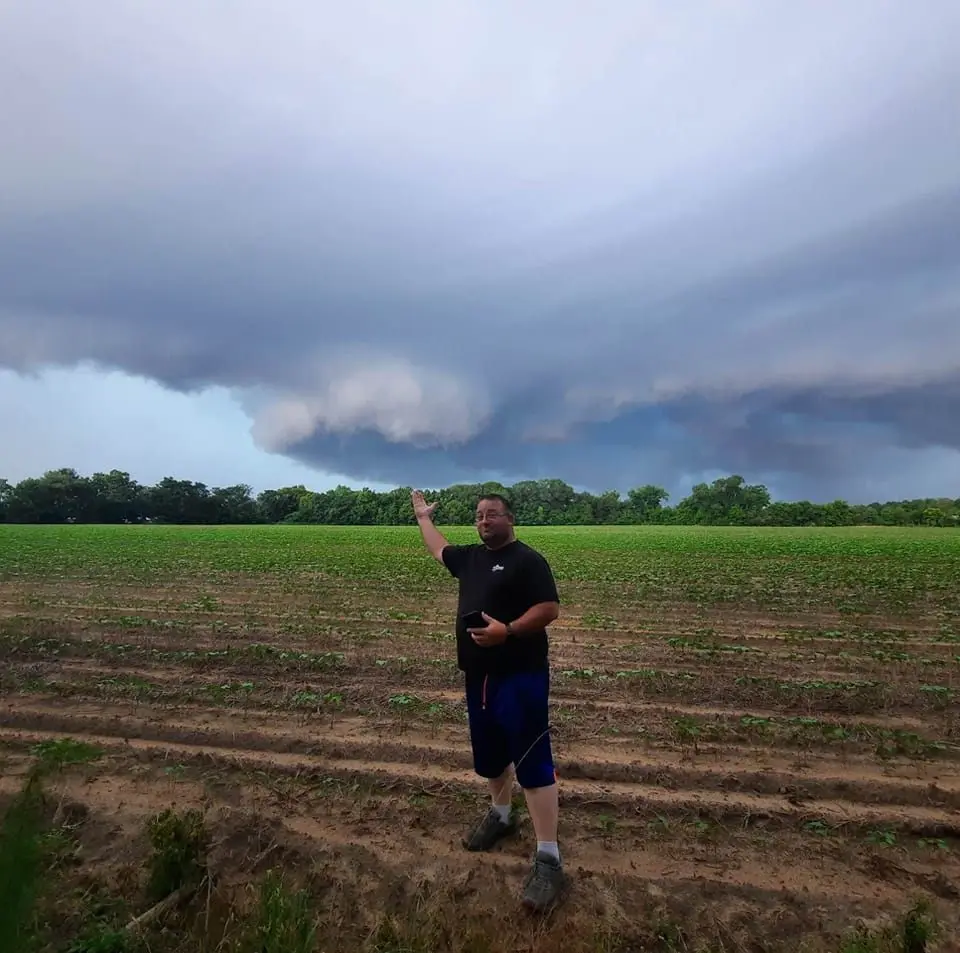
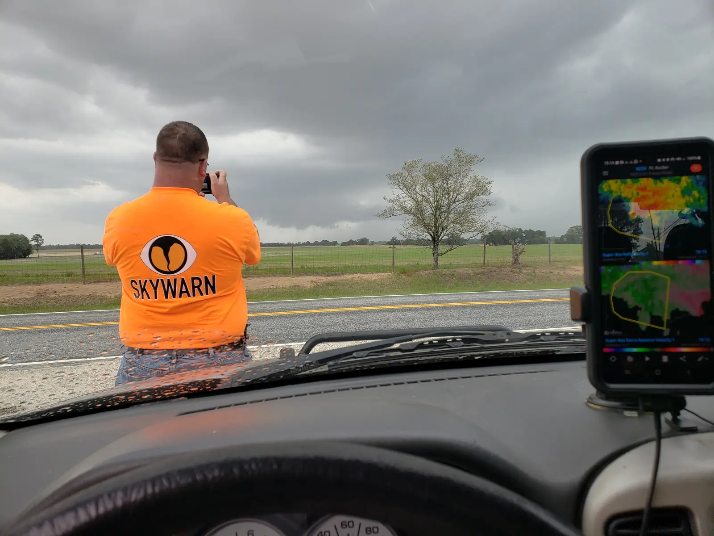

Field observations
Show conditions on the ground through responsible, safety-dependent coverage when travel and timing allow.
About Storm Chaser Larry Morrell
Independent, responsible severe-weather coverage rooted in public service, community awareness and respect for official warning sources.

The background
Larry Morrell is a South Georgia-based storm chaser, longtime severe-weather spotter and Advanced EMT with more than 26 years of storm observation experience.
His background includes volunteer fire service, search and rescue, emergency medical services and community weather awareness. He also founded and led Clinch County Storm Spotters, bringing local spotters together for training, coordination and outreach.
Today, Larry provides responsible field coverage and weather overviews focused primarily on South Georgia, with coverage extending into North Florida and Southeast Alabama when conditions, safety, timing and available resources allow.
From the field


The mission
The mission is to provide ground-level observations, clear regional context and responsible warning reinforcement before, during and after severe weather.
Show conditions on the ground through responsible, safety-dependent coverage when travel and timing allow.
Help viewers understand developing conditions while directing them toward complete official information.
Keep the focus on the people and communities affected across South Georgia, North Florida and Southeast Alabama.
Independent coverage
Storm Chaser Larry Morrell is independently operated. This work does not compete with or replace the National Weather Service, emergency management, broadcast meteorologists, public-safety agencies, storm-spotter groups or other weather organizations.
Larry does not issue official warnings. The purpose of this coverage is to help people see what is occurring, better understand local conditions and connect with official warning information. National Weather Service warnings and instructions from local emergency officials always come first.
Field coverage is never guaranteed and will not be pursued when conditions make it unsafe or impractical. Sponsors help support the costs of coverage, but they never influence chase decisions, weather reporting or the communication of urgent safety information.